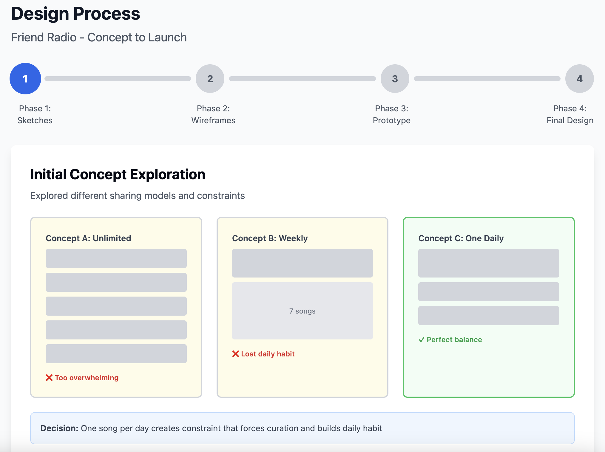
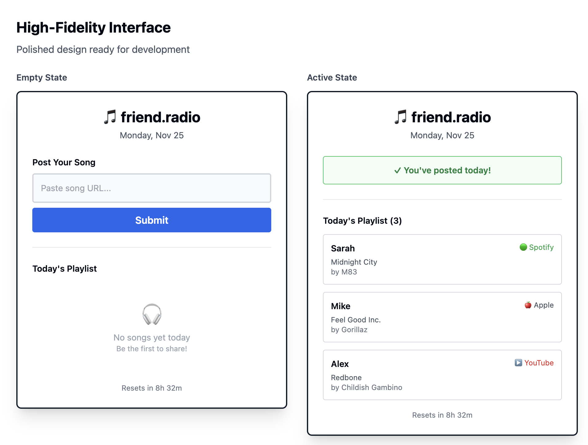

The Problem
My friends and I were stuck in music discovery fatigue — constantly listening to the same songs. Existing music discovery felt algorithmic and impersonal, lacking the human connection that makes recommendations meaningful.
The Solution
Built Friend Radio — a simple app where each person posts one song URL from any streaming platform once per day, creating a curated daily playlist of friend recommendations.
Impact
- 100% daily engagement from friend group (12 users)
- Daily habit formation — consistent morning check-ins
- 60% increase in new music discoveries
- Cross-platform success — works with all streaming services
Initial Observations
Music discovery problems we experienced
- Listening to the same songs repeatedly
- Spotify/Apple algorithms felt repetitive and disconnected
- Great friend recommendations were forgotten
- No simple way to share daily music discoveries
Friend feedback
- "I'm bored of my music but don't know where to find new stuff"
- "I trust my friends' taste more than algorithms"
- "When friends recommend songs, I forget to listen later"
Key insight
The best music discoveries come from trusted friends, but there was no simple way to share and consume daily recommendations within our close group.
Market Research
Music discovery landscape
- 73% of users rely on friends over algorithms for recommendations
- Music consumed daily by 92% of young adults
- Friends use different platforms (Spotify, Apple, SoundCloud, YouTube)
Existing solutions gaps
- Social media: Music posts lost in feeds
- Spotify Social: Limited to one platform
- Group chats: Links buried in conversation
Opportunity
Create a friend-focused, platform-agnostic daily music sharing experience that works across all streaming services.
Becoming My Users
Research methods
- Daily observation of friend group music sharing behavior
- 8 informal interviews about music discovery habits
- A/B testing different sharing mechanics
- Usage tracking during beta testing
Primary users: College friends (ages 20–24)
- Goal: Discover new music that matches their taste
- Behavior: Uses multiple streaming platforms, shares in group chats
- Quote: "I trust my friends' music taste more than any algorithm"
Key insights
- One song per day felt right — not overwhelming but consistent
- Platform flexibility crucial — friends used different services
- Daily reset created urgency — made people check regularly
- Simplicity was key — complex features were ignored
Competitor Research
Alternatives analyzed
- JQBX: Too complex, now discontinued
- Discord music bots: Platform-locked, not daily-focused
- Spotify/Apple social: Limited to single platforms
Key findings
- No simple daily sharing apps for cross-platform music
- Most solutions too complex with unnecessary features
- Platform lock-in prevented equal participation
Our advantage
Simple daily ritual + platform agnostic + friend-only focus
Solution
Design principles
- One song, one day — Constraint creates focus and habit
- Platform agnostic — Accept URLs from any streaming service
- Friend-only — No strangers, just trusted connections
- Daily refresh — Keeps experience fresh and urgent
Key features
- Simple URL input — paste any music link from any platform
- Daily submission limit — forces thoughtful curation
- Shared daily playlist — see everyone's picks in one place
- 24-hour reset — list refreshes daily for freshness
A/B testing results
- One song vs. multiple: 3× higher engagement
- Daily vs. weekly reset: 85% more check-ins
- URL paste vs. search: 90% preferred direct paste
Final Designs
Core experience
- Clean landing page: "Share one song a day and discover what others are listening to"
- Simple submission: One URL input field with submit button
- Daily playlist view: List of all friend submissions with attribution
- Cross-platform: Works on desktop and mobile
Design Process


Technical implementation
- Real-time updates — submissions appear immediately
- URL validation — accepts all major streaming platforms
- Daily auto-reset — clears list every 24 hours
- Minimal authentication — simple friend group access
Reflection
Results (3 months post‑launch)
- 100% daily engagement from 12-person friend group
- Habit formation — consistent morning check-ins
- 60% more new music in friends' libraries
- Increased social bonding through shared music
What worked
- One song constraint created perfect engagement balance
- Platform flexibility — no one excluded by streaming choice
- Daily reset urgency drove consistent usage
- Friend-only focus provided trusted recommendations
Key challenges
- API complexity — handling multiple streaming platform formats
- Real-time architecture — implementing live updates efficiently
- Cross-platform compatibility — consistent experience everywhere
User requests for v2
- Song previews — hear snippets before clicking
- Album artwork — visual appeal enhancement
- Historical access — revisit previous days
- Save functionality — bookmark favorite discoveries
Personal growth
- End-to-end development — problem to shipped product
- Constraint-driven design — learned how limitations improve experiences
- User-centered iteration — building based on real friend feedback
- Technical problem-solving — complex integrations and data management